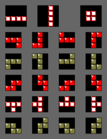
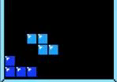
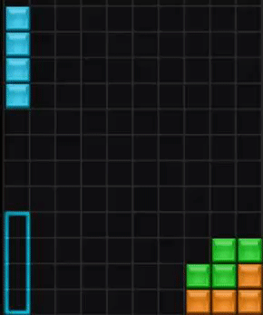
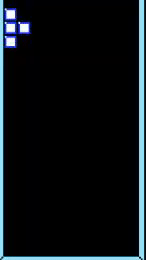

Note: Before 2009, nearly every Tetris scoring system varied from the other.
We'll be using the standard scoring system used after 2009.
Action
Point Value
Single/Mini T-Spin
100 × Level
Mini T-Spin Single
200 × Level
Double
300 × Level
T-Spin/Mini T-Spin Double
400 × Level
Triple
500 × Level
B2B (Back-to-Back) Mini T-Spin Double
600 × Level
Tetris/T-Spin Single
800 × Level
B2B T-Spin Single/B2B Tetris/T-Spin Double
1200 × Level
T-Spin Triple
1600 × Level
B2B T-Spin Double
1800 × Level
B2B T-Spin Triple
2400 × Level
Controls
On console and handheld versions, Tetris made fine use of the D-Pad as players could only move left, right, or down
(to increase the falling speed). Two other buttons are used for rotating left and right. UP is usually the button to hard drop
on the D-Pad while the arrow keys rotate the piece to the right. Versions released since the 90s have a hold button which allows players to hold a single piece for later.
The HOLD mechanic - on PC, the default button is usually C
Rotation
Older versions of Tetris such as the GameBoy and NES versions use the
Nintendo Rotation System.
The NRS is the first rotation system created, with a left- and right-hand rotation system. A prime comparison of this can be
seen from the two versions mentioned above.
Left-hand Rotation (GameBoy)

Right-hand Rotation (NES)
Newer versions have the Super Rotation System (SRS). Core mechanics were introduced that made the game
more fluid and forgiving to play.
Lock Delay
When at the very bottom or touching a piece, the period where the piece may be moved before locking
was significantly increased.
Lock Delay with SRS

No Lock Delay (NRS)
Wall Kick
If a piece slides along a wall, even without enough room, the game will make enough space so that the
piece will rotate.

Wall Kick

No Wall Kick (I swear I'm mashing the buttons!)
Hard Drop
Instead of holding down to quicken the falling speed of a piece, it can be immediately dropped into a spot.
(Usually UP on the D-Pad.)